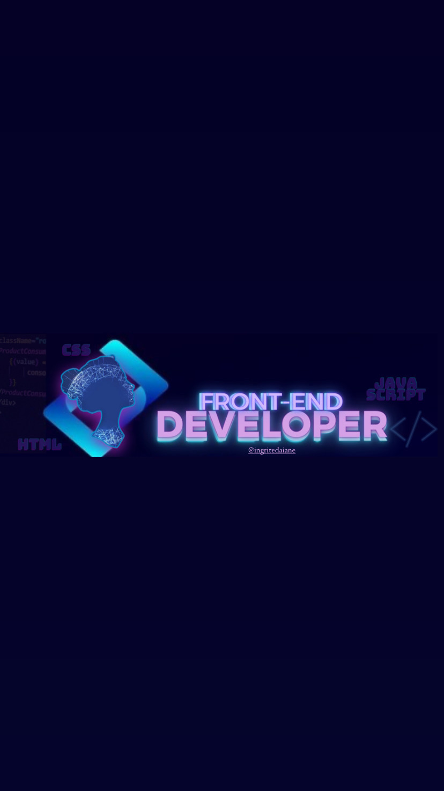
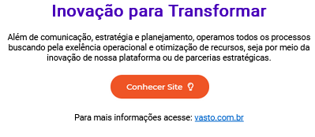
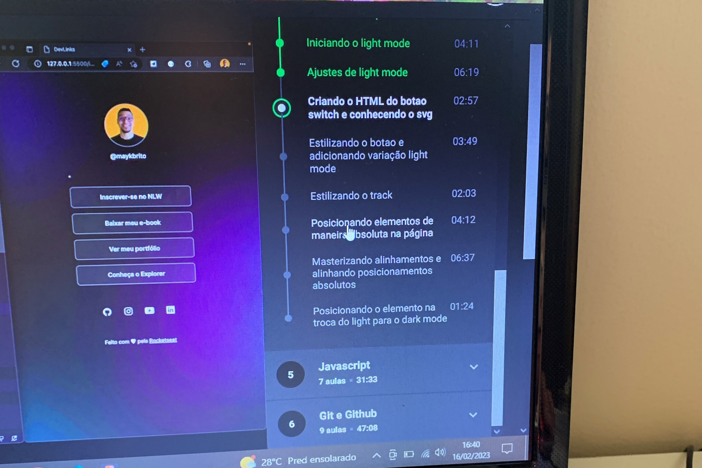
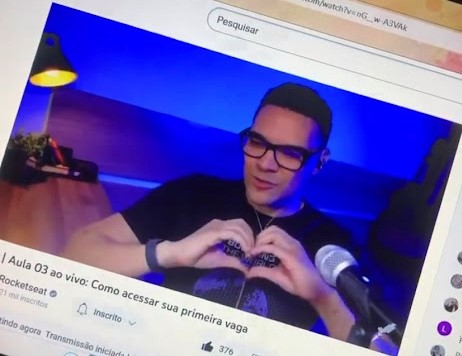
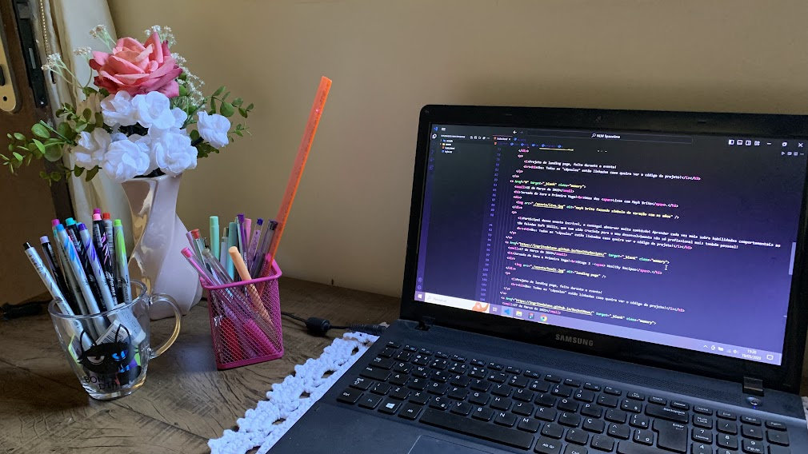

Primeiros dias de 2023
Eu decidi que ia mudar de vida!
Mission Front-end Developer.

Oii e aí tudo bem? com intuito de apresentar minha jornada nesse universo da programação, vou fazer um breve resumo!
Eu sempre fui aquela pessoa que tem "facilidade" com tecnologia, sabe aquele parente que todo mundo tem que "conserta" tudo(na verdade só configura né), então na minha familía esse parente sou eu 😅!
-
Trabalhei durante anos na aréa da saúde, mais sempre com desejo de trabalhar em algo que não fosse cansativo e tedioso pra mim, que eu não estivesse ali só pela obrigação, ou porque eu preciso de dinheiro, eu queria fazer algo que eu realmente gostasse e que com certeza a partir disso eu daria o meu melhor.
-
No começo da minha busca eu queria ser web designer, designer grafico, designer de qualquer coisa rss' tudo pelo fato de gostar de colorir, gostar de cores e etc! Eu estava no mar com uma peneira, tentando achar algo que se adequasse nos meus critérios.. Foi daí que surgiu o interesse pela programação, onde eu posso unir duas coisas que eu gosto, se eu não estiver errada seria Dev. Front-end e UI Designer 🎨💻.
"A única maneira de fazer um bom trabalho é amando o que você faz. Se você ainda não encontrou, continue procurando. Não se desespere. Assim como no amor, você saberá quando tiver encontrado."
-Steve Jobs
Janeiro de 2023
Inicio de tudo
HTML.

Esse foi um dos primeiros projetos que eu consegui fazer vendo aulas na plataforma do EBAC, as informações pra mim ainda estavam bem soltas e eu ainda não tinha decidido o que queria "fazer da minha vida", so sabia que queria mecher com computador de casa, ganhar dinheiro, não ter ninguém enchendo minha paciência e de bônus ainda ia tomar um cafézinho na santa paz de Deus(sabe de nada inocentee..) Digo uns dos primeiros porque o primeiro que eu vi de verdade foi um curriculo todo em html, o qual eu so vi a aula e achei que ia decorar tudo, resumindo eu dormir e no outro dia lembrava de mais nada 🤡!
Pra ser bem sincera eu tava so tentando achar um meio de ganhar dinheiro fácil e rápido (iludida a coitada..), não sabia nem que a programação tinha essas divisões de back, front, mobile... que tinha o pessoal do product designer, do ux, do ui.. (e do uai rss brincadeira)
16 de Fevereiro de 2023
Jornada rumo ao sucesso!
Projeto DevLinks.

Eu lembro exatamente como eu encontrei a Rocketseat, foi ouvindo um podcast, não vou lembrar qual, mais fica a dica, podcast tem muito contéudo interessante! E nesse em questão era sobre - trilhas na área da tecnologia! e foi mensionado a trilha da Rocket para Front-end, dei um google encontrei o DevLinks, e foi aí que eu conheci o Mayk Brito, cara que didática dahora, e incrível a segurança que ele transmite pra não deixar o "iniciante" com medo ou receio de não ter aprendido algo ou não ter entendido. A partir desse ponto eu senti que realmente conseguia ser uma Dev no futuro 👩💻.
“Existe um momento na vida de cada pessoa que é possível sonhar e realizar sonhos… E esse momento tão fugaz chama-se presente e tem a duração do tempo que passa.”
- Mario Quintana.
15 de Março de 2023
Jornada do Zero a Primeira Vaga!
Umas das Lives com Mayk Brito.

Participei desse evento, onde tivemos aulas para desenvolver 3 projetos de landing page, e também lives de mentoria com conteúdo bem intuitivo voltado pra quem quer dar o primeiro passo e tirar as suas dúvidas em relação a programação! Aprender cada vez mais sobre habilidades comportamentais as tão faladas Soft Skills tem sido uma experiência incrível, eu não sei vocês mais do historico de trabalho que eu venho, não tem essa de Soft Skill não 👀, ter mais conhecimento sobre esse assunto e saber que tem empresas que prezam por isso tem sido crucial para o meu desenvolvimento.
"Você só deve tentar ser melhor do que uma pessoa: quem você era ontem."
19 de Maio de 2023
Meu Primeiro NLW na Trilha Explorer
NLW Spacetime.

Fiz questão de tirar essa foto hoje, esse e o meu cantinho de estudos dentro do meu quarto! Eu não tenho um dos melhores notebooks do mercado, não tenho o espaço dos sonhos, cheio de leds, quadros e enfeites (não tenho ainda...), hoje estou desempregada, posso dizer que por escolha propria, já que eu pedi demissão do meu antigo trabalho... Hoje eu sei que sim programação e pra mim, e sim eu consigo fazer muita coisa desde que eu queira e me esforçe pra isso, muita coisa mudou de Janeiro pra cá, meus pensamentos "egoístas", algumas formas de agir e pensar, e creio que a mudança para o melhor vai continuar constante! Nessa última aula o Mayk falou uma coisa muito importante que foi como se ele tivesse lendo meus pensamentos...
-
"Se não for o seu momento, se você não tem condições agora, eu não quero que você venha com a corda no pescoço, eu quero que você espere um pouco, para fazer o insvestimento na hora e no momento certo..."
-
Obrigada Mayk pela sua sinceridade e honestidade.
Obrigada Rodrigo por me ensinar novos conceitos técnicos (agora vou colorir tooodas as minhas scrollbar rss') e gratidão por compartilhar sua historia e me inspirar!!
“Suas pequenas vitórias são todas as dificuldades superadas durante sua vida, tenha orgulho delas”.